企業分析與行銷策略報告展示
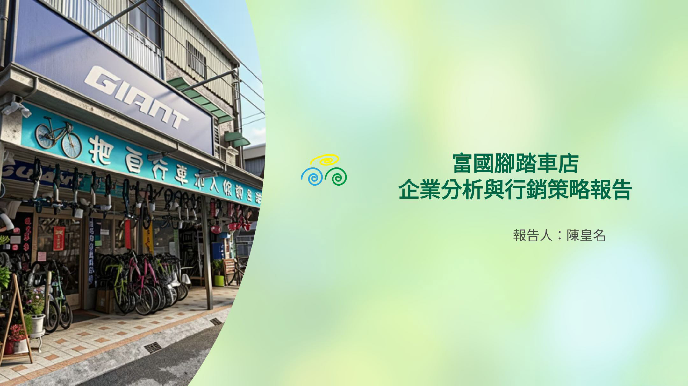
富國腳踏車店專屬行銷企劃封面，由陳皇名報告。
一甲子，只為你的安全。展現資深黑手底子與紮實的維修手藝。
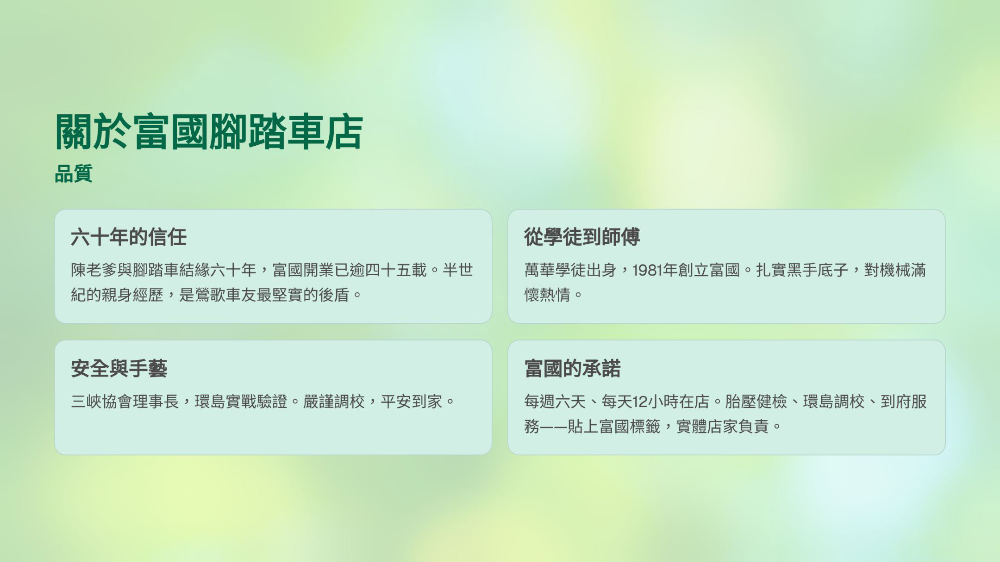
六十年的信任、安全與手藝。強調實體店家負責與到府服務的承諾。
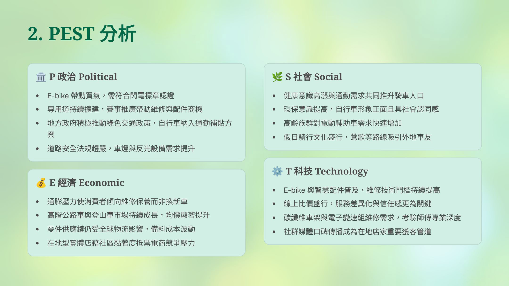
深入剖析政治 (P)、經濟 (E)、社會 (S) 與科技 (T) 四大面向對自行車產業的影響。
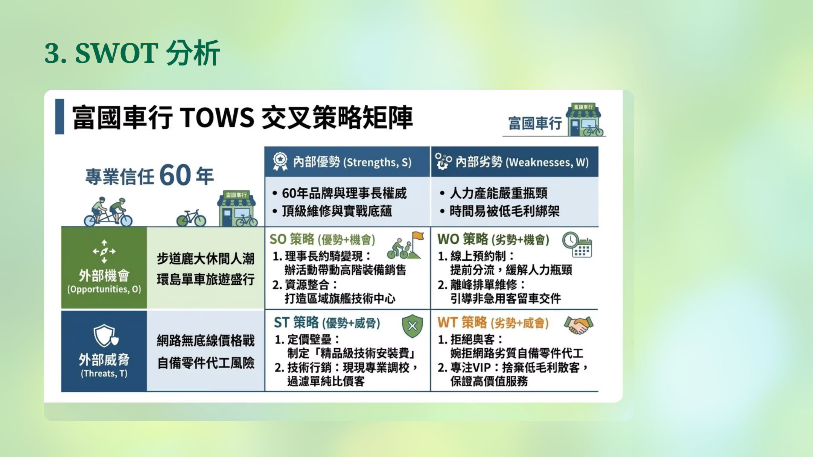
透過 TOWS 矩陣，擬定 SO、ST、WO、WT 策略，發揮 60 年專業優勢並應對外部挑戰。
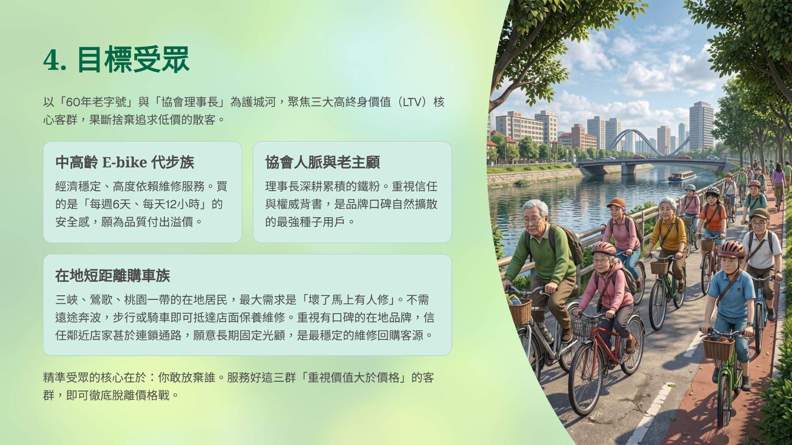
聚焦三大高終身價值 (LTV) 客群：中高齡 E-bike 代步族、在地短距離購車族與老主顧。
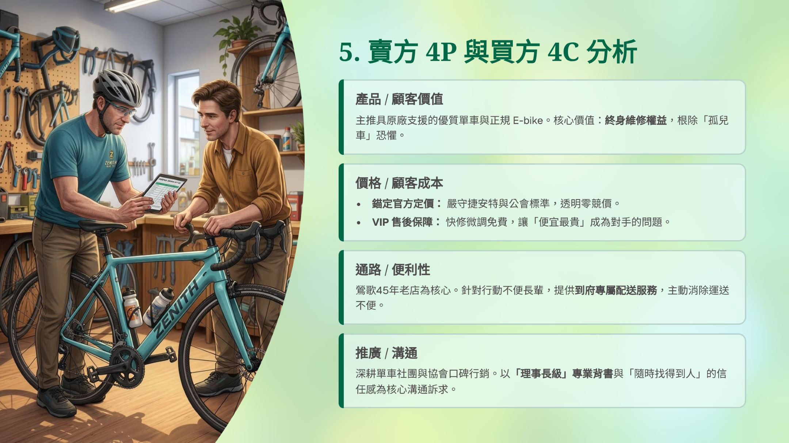
結合產品價值、價格成本、通路便利性與推廣溝通，打造全方位行銷組合。
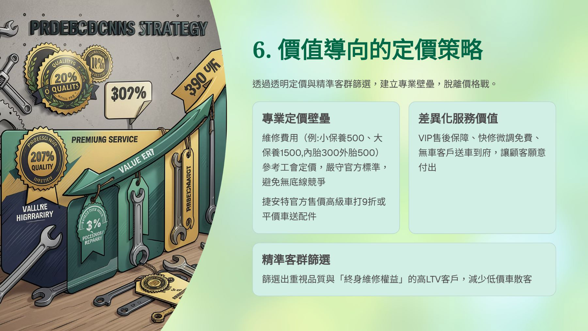
透過透明定價與精準客群篩選，建立專業壁壘，提供差異化服務價值以脫離價格戰。
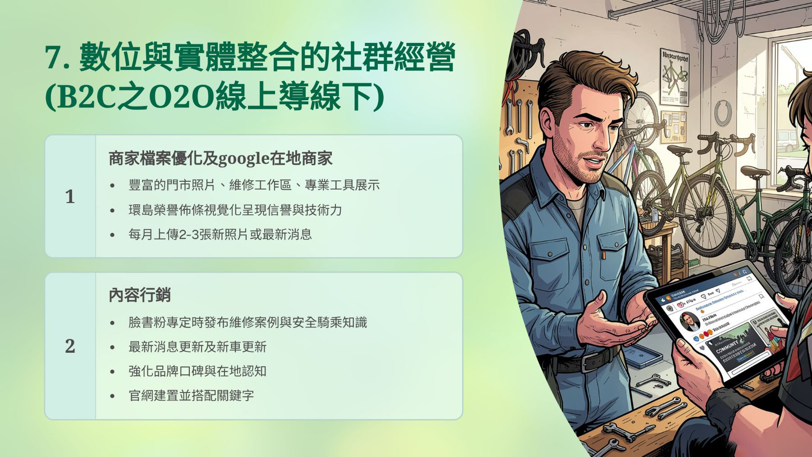
B2C 之 O2O 線上導線下策略，涵蓋 Google 商家檔案優化與內容行銷。
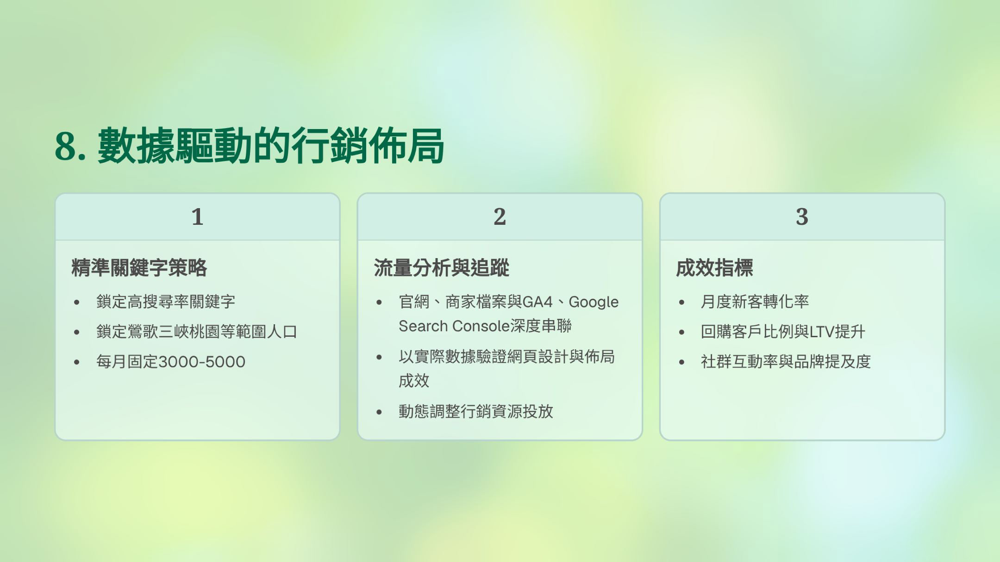
透過精準關鍵字策略、流量分析追蹤與成效指標設定，動態調整行銷資源。
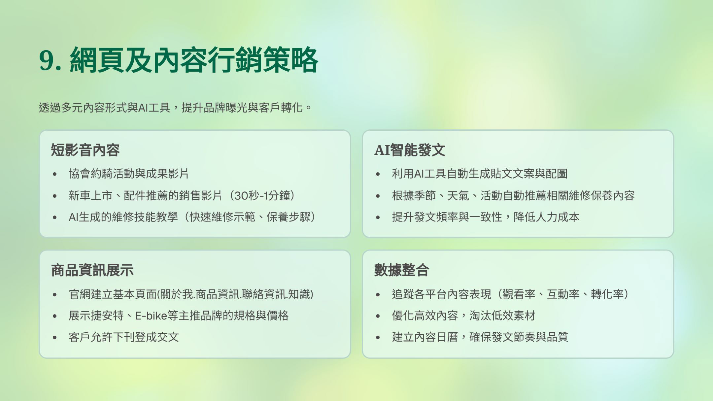
針對各項數位行銷與實體活動，進行合理的資金與人力資源佈局規劃。
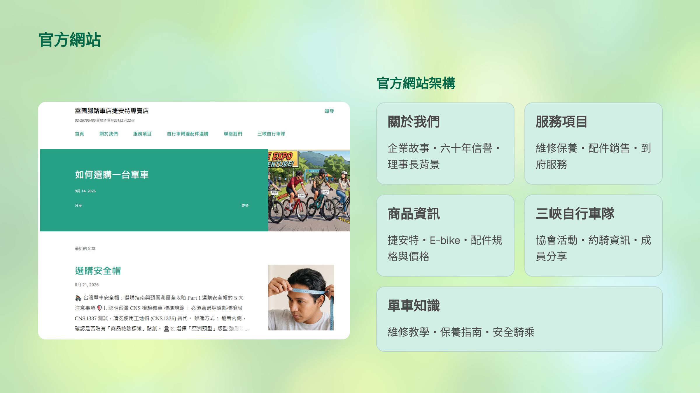
列出短、中、長期的行銷推廣計畫里程碑，確保各階段策略準時落地。
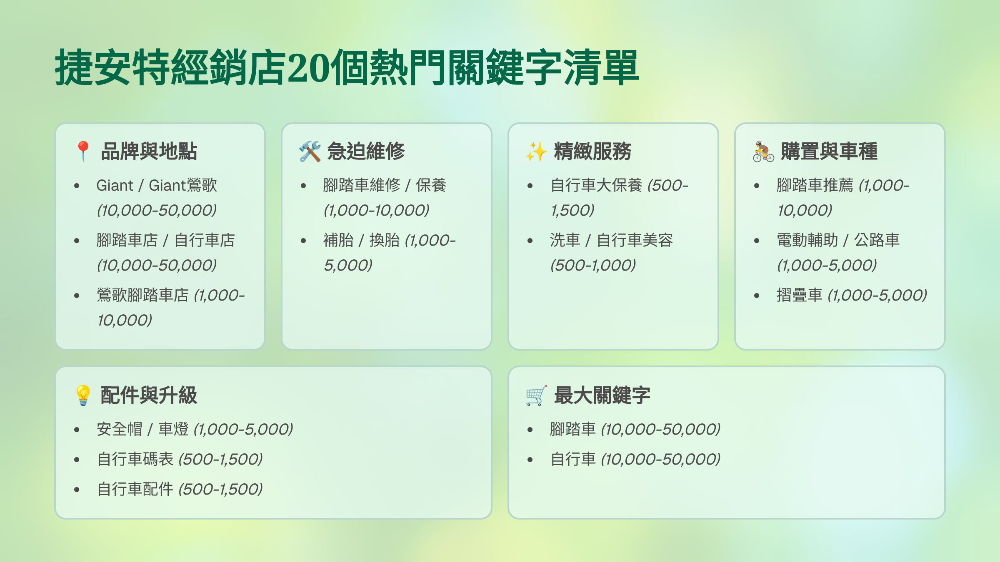
預估策略執行後，在品牌聲量、顧客留存率與整體營業額的實質成長目標。
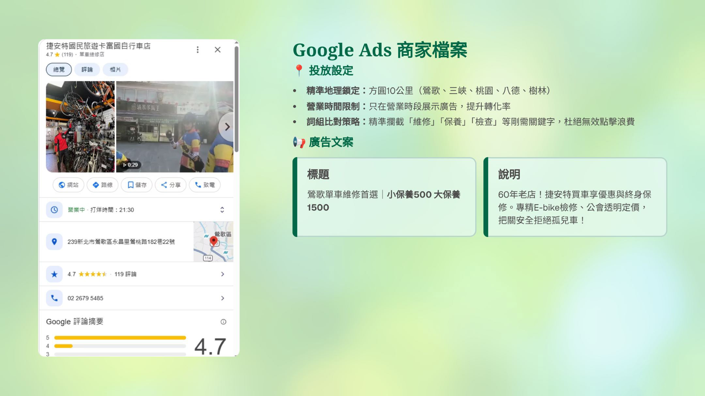
列舉潛在的市場變動與價格競爭風險，並提出對應的防禦與備案措施。
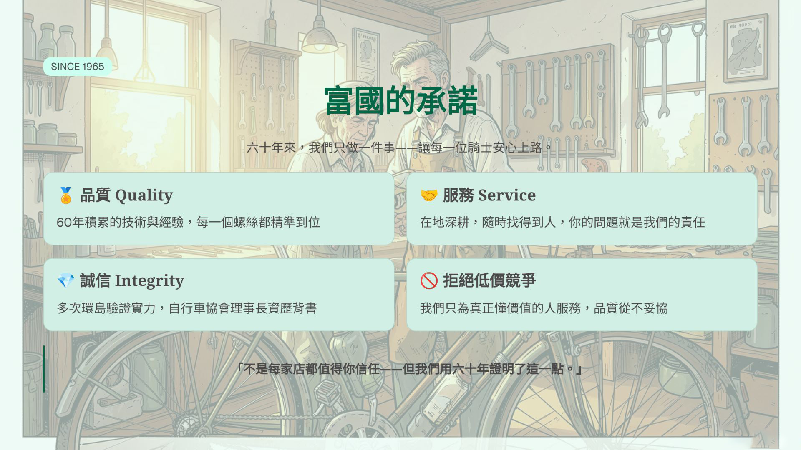
堅守 60 年職人精神，透過數位轉型與社群深耕，打造下一個輝煌的里程碑。